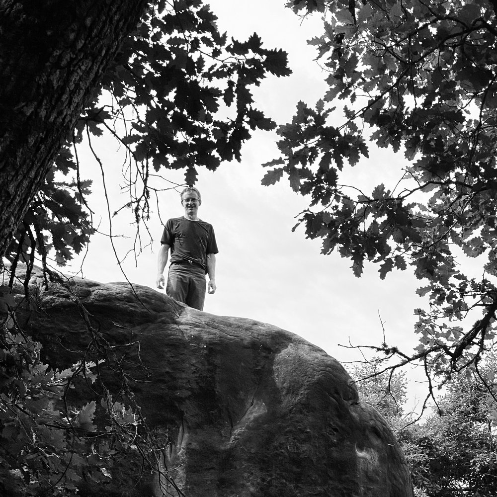

Hello. I’m Tom, a digital product designer based in London.
I’ve been untangling complexity in product for 14 years now, but my background is in wayfinding: design to help people navigate spaces, which has shaped the principles I bring to user experience.
I helped to get data automation platform Quantemplate started and have spent over a decade there building out the vision as Head of Design, with end-to-end ownership of the design, from the first scribble on a whiteboard to the last pixel tweaked. People say I’m good at defining high level concepts, finding a path through uncertain territory, and executing the visual design craft.
Along the way, I’ve hired and managed some talented people, led design of Quantemplate’s brand and website, and taken on a few fun side projects. I’ve done a bit of speaking and co-founded the Design for Complexity meetup in London.
I’m a co-founder and trustee of the Isokon Gallery, an award-winning micro-museum dedicated to the history of modernist design and architecture.
Outside of work, I’m usually to be found at the climbing wall with my family or, even better, bouldering in the forest of Fontainebleau.